3. Análisis Exploratorio de Datos#
Estructura del dataset:
brisc2025/
└── segmentation_task/
├── train/
│ ├── images/
│ └── masks/
└── test/
├── images/
└── masks/
Fuente: [FRM+26a]. BRISC: Brain Image Segmentation Challenge Dataset. Scientific Data, Nature.
Configuración e Importaciones#
import os
import re
import cv2
import random
import warnings
import numpy as np
import pandas as pd
import matplotlib.pyplot as plt
import seaborn as sns
from pathlib import Path
from glob import glob
from scipy import stats
from itertools import combinations
warnings.filterwarnings('ignore')
# Reproducibilidad
SEED = 42
random.seed(SEED)
np.random.seed(SEED)
# Configuración de visualización
plt.rcParams['figure.dpi'] = 120
plt.rcParams['font.family'] = 'DejaVu Sans'
plt.rcParams['axes.titlesize'] = 13
plt.rcParams['axes.labelsize'] = 11
plt.rcParams['xtick.labelsize'] = 10
plt.rcParams['ytick.labelsize'] = 10
sns.set_style('whitegrid')
print('Librerías cargadas correctamente.')
Librerías cargadas correctamente.
# --- CONFIGURACIÓN DE RUTAS ---
BASE_PATH = Path('brisc2025/segmentation_task')
PARTICIONES = ['train', 'test']
COLORES_PARTICION = {
'train': '#2196F3',
'test': '#E53935'
}
print(f'Directorio base: {BASE_PATH}')
for p in PARTICIONES:
dir_img = BASE_PATH / p / 'images'
dir_msk = BASE_PATH / p / 'masks'
print(f' {p}/images : existe={dir_img.exists()}')
print(f' {p}/masks : existe={dir_msk.exists()}')
Directorio base: brisc2025\segmentation_task
train/images : existe=True
train/masks : existe=True
test/images : existe=True
test/masks : existe=True
1. Carga y Visualización Inicial#
Antes de cualquier análisis cuantitativo conviene ver el material con el que se trabaja. Se muestra una imagen representativa de cada partición junto a su máscara de segmentación, para tener intuición sobre la apariencia visual de las imágenes MRI y de cómo lucen las regiones tumorales anotadas.
Las máscaras son binarias: los píxeles blancos (255) corresponden a la región tumoral y los píxeles negros (0) al tejido sano y al fondo. Esta anotación es el ground truth que el modelo deberá aprender a reproducir píxel a píxel.
def extraer_numero(nombre_archivo):
"""Extrae el primer número del nombre de un archivo para ordenar correctamente."""
coincidencia = re.search(r'\d+', os.path.basename(str(nombre_archivo)))
return int(coincidencia.group()) if coincidencia else float('inf')
fig, axes = plt.subplots(2, len(PARTICIONES), figsize=(10, 7))
fig.suptitle('Muestra Inicial: Imagen y Máscara por Partición', fontsize=13, fontweight='bold')
for i, particion in enumerate(PARTICIONES):
dir_img = BASE_PATH / particion / 'images'
dir_msk = BASE_PATH / particion / 'masks'
rutas_img = sorted(glob(str(dir_img / '*.png')), key=extraer_numero)
if not rutas_img:
rutas_img = sorted(glob(str(dir_img / '*.jpg')), key=extraer_numero)
if not rutas_img:
print(f'No se encontraron imágenes en {particion}')
continue
ruta_img = rutas_img[0]
nombre = os.path.basename(ruta_img)
ruta_msk = dir_msk / nombre
if not ruta_msk.exists():
ruta_msk = dir_msk / (os.path.splitext(nombre)[0] + '.png')
img = cv2.imread(ruta_img, cv2.IMREAD_GRAYSCALE)
msk = cv2.imread(str(ruta_msk), cv2.IMREAD_GRAYSCALE) if ruta_msk.exists() else np.zeros_like(img)
axes[0, i].imshow(img, cmap='gray')
axes[0, i].set_title(f'{particion.capitalize()}', fontweight='bold',
color=COLORES_PARTICION[particion])
axes[0, i].axis('off')
if i == 0:
axes[0, i].set_ylabel('Imagen MRI', fontsize=10)
axes[1, i].imshow(msk, cmap='gray')
axes[1, i].axis('off')
if i == 0:
axes[1, i].set_ylabel('Máscara (ground truth)', fontsize=10)
plt.tight_layout()
plt.savefig('eda_01_visualizacion_inicial.png', bbox_inches='tight')
plt.show()
print('Figura guardada: eda_01_visualizacion_inicial.png')
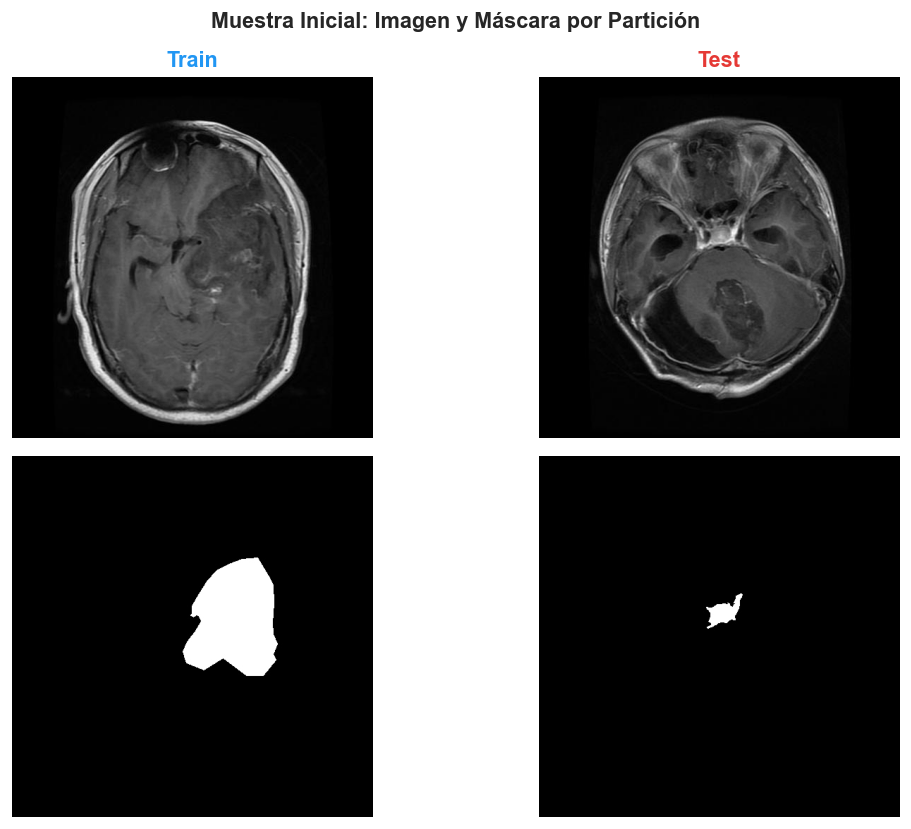
Figura guardada: eda_01_visualizacion_inicial.png
Las imágenes MRI muestran cortes cerebrales en escala de grises con intensidades que reflejan las propiedades del tejido en la secuencia adquirida. Las máscaras confirman una anotación binaria limpia: la región tumoral está delimitada con precisión y el fondo es uniforme en valor cero. La correspondencia visual entre imagen y máscara es consistente en ambas particiones, lo que indica que el proceso de anotación es homogéneo y no introduce ruido de etiquetado evidente.
2. Inventario del Dataset#
Se cuantifica el número de imágenes y máscaras por partición, y se verifica que exista correspondencia uno a uno entre imágenes y máscaras. En segmentación, una imagen sin máscara no puede usarse para entrenamiento supervisado.
print('=== INVENTARIO DEL DATASET ===')
print(f' {"Partición":<10} {"Imágenes":>10} {"Máscaras":>10} {"Sin máscara":>12}')
print(' ' + '-' * 46)
conteo_particion = {}
total_imgs = 0
for particion in PARTICIONES:
dir_img = BASE_PATH / particion / 'images'
dir_msk = BASE_PATH / particion / 'masks'
rutas_img = glob(str(dir_img / '*.png')) + glob(str(dir_img / '*.jpg'))
rutas_msk = glob(str(dir_msk / '*.png')) + glob(str(dir_msk / '*.jpg'))
# Verificar correspondencia
nombres_img = {os.path.splitext(os.path.basename(f))[0] for f in rutas_img}
nombres_msk = {os.path.splitext(os.path.basename(f))[0] for f in rutas_msk}
sin_mascara = len(nombres_img - nombres_msk)
conteo_particion[particion] = {
'imagenes': len(rutas_img),
'mascaras': len(rutas_msk),
'sin_mascara': sin_mascara
}
total_imgs += len(rutas_img)
print(f' {particion:<10} {len(rutas_img):>10} {len(rutas_msk):>10} {sin_mascara:>12}')
print(' ' + '-' * 46)
print(f' {"TOTAL":<10} {total_imgs:>10}')
=== INVENTARIO DEL DATASET ===
Partición Imágenes Máscaras Sin máscara
----------------------------------------------
train 3933 3933 0
test 860 860 0
----------------------------------------------
TOTAL 4793
El dataset contiene 4793 imágenes en total: 3933 en train (82%) y 860 en test (18%).
Todas las imágenes tienen su máscara correspondiente, sin ningún caso sin cobertura, lo que significa que el dataset puede usarse directamente para entrenamiento supervisado sin filtrado previo.
3. Construcción del DataFrame#
Se organiza el dataset en un DataFrame donde cada fila representa una imagen con su máscara correspondiente. Las dimensiones y la carga tumoral se calculan en este paso para usarlas en todas las secciones de análisis que siguen.
print('Construyendo DataFrame...')
registros = []
for particion in PARTICIONES:
dir_img = BASE_PATH / particion / 'images'
dir_msk = BASE_PATH / particion / 'masks'
rutas_img = sorted(
glob(str(dir_img / '*.png')) + glob(str(dir_img / '*.jpg')),
key=extraer_numero
)
for ruta_img in rutas_img:
nombre = os.path.basename(ruta_img)
nombre_base = os.path.splitext(nombre)[0]
# Buscar máscara correspondiente por nombre
ruta_msk = dir_msk / nombre
if not ruta_msk.exists():
ruta_msk = dir_msk / (nombre_base + '.png')
if not ruta_msk.exists():
ruta_msk = None
img = cv2.imread(ruta_img, cv2.IMREAD_GRAYSCALE)
if img is None:
continue
alto, ancho = img.shape
pct_tumor = 0.0
tiene_mascara = False
if ruta_msk is not None:
msk = cv2.imread(str(ruta_msk), cv2.IMREAD_GRAYSCALE)
if msk is not None:
tiene_mascara = True
pct_tumor = 100.0 * (msk > 0).sum() / msk.size
registros.append({
'Particion': particion,
'Nombre': nombre,
'alto': alto,
'ancho': ancho,
'n_pixeles': alto * ancho,
'pct_tumor': pct_tumor,
'tiene_mascara': tiene_mascara
})
df = pd.DataFrame(registros)
print(f'DataFrame construido: {len(df)} filas x {df.shape[1]} columnas')
print()
print(df.groupby('Particion')[['alto', 'ancho', 'n_pixeles', 'pct_tumor']].describe().round(2).to_string())
Construyendo DataFrame...
DataFrame construido: 4793 filas x 7 columnas
alto ancho n_pixeles pct_tumor
count mean std min 25% 50% 75% max count mean std min 25% 50% 75% max count mean std min 25% 50% 75% max count mean std min 25% 50% 75% max
Particion
test 860.0 487.06 79.0 195.0 512.0 512.0 512.0 1019.0 860.0 484.56 85.47 174.0 512.0 512.0 512.0 1149.0 860.0 242580.15 68691.27 40020.0 262144.0 262144.0 262144.0 1170831.0 860.0 2.12 2.03 0.13 0.78 1.42 2.75 16.70
train 3933.0 505.63 50.0 202.0 512.0 512.0 512.0 1427.0 3933.0 505.03 51.48 180.0 512.0 512.0 512.0 1365.0 3933.0 257864.74 56045.76 39240.0 262144.0 262144.0 262144.0 1863225.0 3933.0 1.83 1.48 0.04 0.86 1.44 2.32 19.61
print(df.info())
print()
print('Distribución por partición:')
print(df['Particion'].value_counts())
<class 'pandas.core.frame.DataFrame'>
RangeIndex: 4793 entries, 0 to 4792
Data columns (total 7 columns):
# Column Non-Null Count Dtype
--- ------ -------------- -----
0 Particion 4793 non-null object
1 Nombre 4793 non-null object
2 alto 4793 non-null int64
3 ancho 4793 non-null int64
4 n_pixeles 4793 non-null int64
5 pct_tumor 4793 non-null float64
6 tiene_mascara 4793 non-null bool
dtypes: bool(1), float64(1), int64(3), object(2)
memory usage: 229.5+ KB
None
Distribución por partición:
Particion
train 3933
test 860
Name: count, dtype: int64
4. Análisis Descriptivo#
4.1 Distribución de Imágenes por Partición#
Se verifica el balance entre train y test. Una proporción estándar es 80/20. Un desbalance muy marcado entre particiones no afecta el entrenamiento directamente, pero sí la confiabilidad de la evaluación: un conjunto de test muy pequeño produce estimaciones de Dice Score con alta varianza.
counts = df['Particion'].value_counts()
fig, axes = plt.subplots(1, 2, figsize=(12, 5))
fig.suptitle('Distribución de Imágenes por Partición', fontsize=13, fontweight='bold')
colores = [COLORES_PARTICION[p] for p in counts.index]
barras = axes[0].bar(counts.index, counts.values, color=colores, edgecolor='white', linewidth=0.8)
axes[0].set_xlabel('Partición')
axes[0].set_ylabel('Número de imágenes')
total = counts.sum()
for barra, val in zip(barras, counts.values):
axes[0].text(barra.get_x() + barra.get_width()/2, barra.get_height() + 1,
f'{val}\n({100*val/total:.1f}%)', ha='center', va='bottom', fontsize=11)
axes[0].set_ylim(0, counts.max() * 1.25)
axes[0].set_title('Conteo por partición')
wedges, texts, autotexts = axes[1].pie(
counts.values, labels=counts.index,
autopct='%1.1f%%', colors=colores, startangle=140,
wedgeprops={'edgecolor': 'white', 'linewidth': 1.5}
)
for autotext in autotexts:
autotext.set_color('white')
autotext.set_fontweight('bold')
axes[1].set_title('Proporción train / test')
plt.tight_layout()
plt.savefig('eda_02_distribucion_particiones.png', bbox_inches='tight')
plt.show()
print('Figura guardada: eda_02_distribucion_particiones.png')
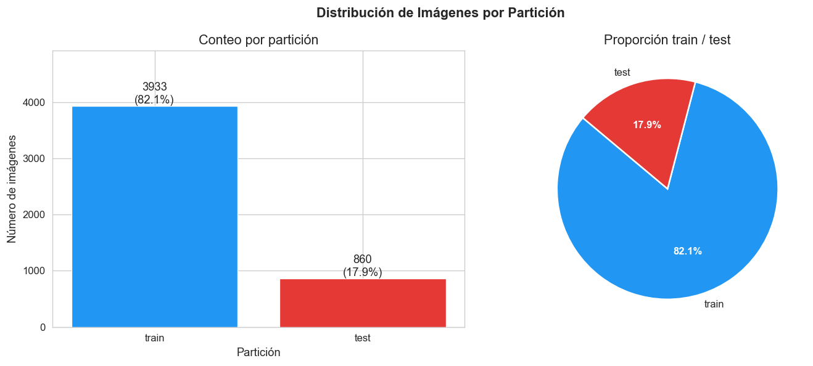
Figura guardada: eda_02_distribucion_particiones.png
La proporción 82/18 entre train y test es ligeramente más cargada hacia entrenamiento que el estándar 80/20, pero es adecuada para un dataset de segmentación médica de este tamaño.
Con 860 imágenes de test el conjunto de evaluación es suficientemente grande para producir estimaciones estables del Dice Score sin necesidad de recurrir a validación cruzada.
4.2 Distribución del Tamaño de las Imágenes#
El tamaño de entrada al modelo de segmentación debe ser fijo. En segmentación el redimensionamiento es más delicado que en clasificación: al redimensionar la imagen también se redimensiona la máscara, y si se usa interpolación bilineal sobre la máscara se introducen valores intermedios entre 0 y 255 que corrompan la anotación binaria. La interpolación correcta para las máscaras es siempre INTER_NEAREST.
print('Estadísticas de dimensiones por partición:')
print(df.groupby('Particion')[['alto', 'ancho', 'n_pixeles']].describe().round(1).to_string())
fig, ax = plt.subplots(figsize=(10, 5))
datos_box = [df[df['Particion'] == p]['n_pixeles'].values for p in PARTICIONES]
bp = ax.boxplot(datos_box, patch_artist=True,
labels=[p.capitalize() for p in PARTICIONES], vert=False)
for patch, p in zip(bp['boxes'], PARTICIONES):
patch.set_facecolor(COLORES_PARTICION[p])
patch.set_alpha(0.75)
ax.set_xlabel('Número total de píxeles (alto × ancho)')
ax.set_ylabel('Partición')
ax.set_title('Distribución del Tamaño de las Imágenes por Partición')
plt.tight_layout()
plt.savefig('eda_03_tamano_imagenes.png', bbox_inches='tight')
plt.show()
print('Figura guardada: eda_03_tamano_imagenes.png')
Estadísticas de dimensiones por partición:
alto ancho n_pixeles
count mean std min 25% 50% 75% max count mean std min 25% 50% 75% max count mean std min 25% 50% 75% max
Particion
test 860.0 487.1 79.0 195.0 512.0 512.0 512.0 1019.0 860.0 484.6 85.5 174.0 512.0 512.0 512.0 1149.0 860.0 242580.1 68691.3 40020.0 262144.0 262144.0 262144.0 1170831.0
train 3933.0 505.6 50.0 202.0 512.0 512.0 512.0 1427.0 3933.0 505.0 51.5 180.0 512.0 512.0 512.0 1365.0 3933.0 257864.7 56045.8 39240.0 262144.0 262144.0 262144.0 1863225.0
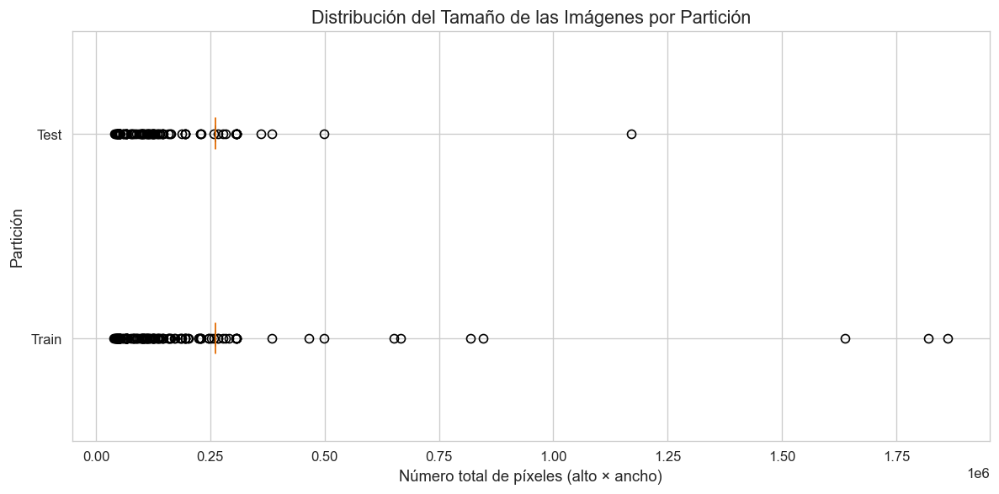
Figura guardada: eda_03_tamano_imagenes.png
El percentil 25, la mediana y el percentil 75 de n_pixeles coinciden en 262144 (512×512) en ambas particiones, lo que indica que la resolución dominante es 512×512.
Sin embargo, la presencia de valores mínimos en torno a 40000 px y máximos superiores a 1 millón de píxeles revela casos atípicos que deben redimensionarse antes del entrenamiento. Se confirma la necesidad de una resolución de entrada fija, con 256×256 como opción razonable que reduce el costo computacional a la mitad sin perder la estructura anatómica relevante.
4.3 Análisis de Dimensiones: Ancho vs Alto#
El scatter de ancho frente a alto permite identificar si las imágenes tienen una resolución estándar concentrada o alta dispersión. Si los puntos se agrupan cerca de la diagonal 1:1, las imágenes son aproximadamente cuadradas y un redimensionamiento directo a NxN introduce poca distorsión geométrica.
fig, ax = plt.subplots(figsize=(8, 7))
for p in PARTICIONES:
sub = df[df['Particion'] == p]
ax.scatter(sub['ancho'], sub['alto'], alpha=0.4, s=15,
label=p.capitalize(), color=COLORES_PARTICION[p])
max_dim = max(df['ancho'].max(), df['alto'].max())
ax.plot([0, max_dim], [0, max_dim], 'k--', linewidth=1, alpha=0.5, label='Aspecto 1:1')
ax.set_xlabel('Ancho (px)')
ax.set_ylabel('Alto (px)')
ax.set_title('Relación Ancho vs Alto por Partición')
ax.legend(markerscale=2)
plt.tight_layout()
plt.savefig('eda_04_ancho_vs_alto.png', bbox_inches='tight')
plt.show()
print('Figura guardada: eda_04_ancho_vs_alto.png')
# Resolución más frecuente por partición
df['resolucion'] = df['ancho'].astype(str) + 'x' + df['alto'].astype(str)
print('\nResolución más frecuente por partición:')
for p in PARTICIONES:
top = df[df['Particion'] == p]['resolucion'].value_counts().head(3)
print(f' {p}: {list(top.index)} (conteos: {list(top.values)})')
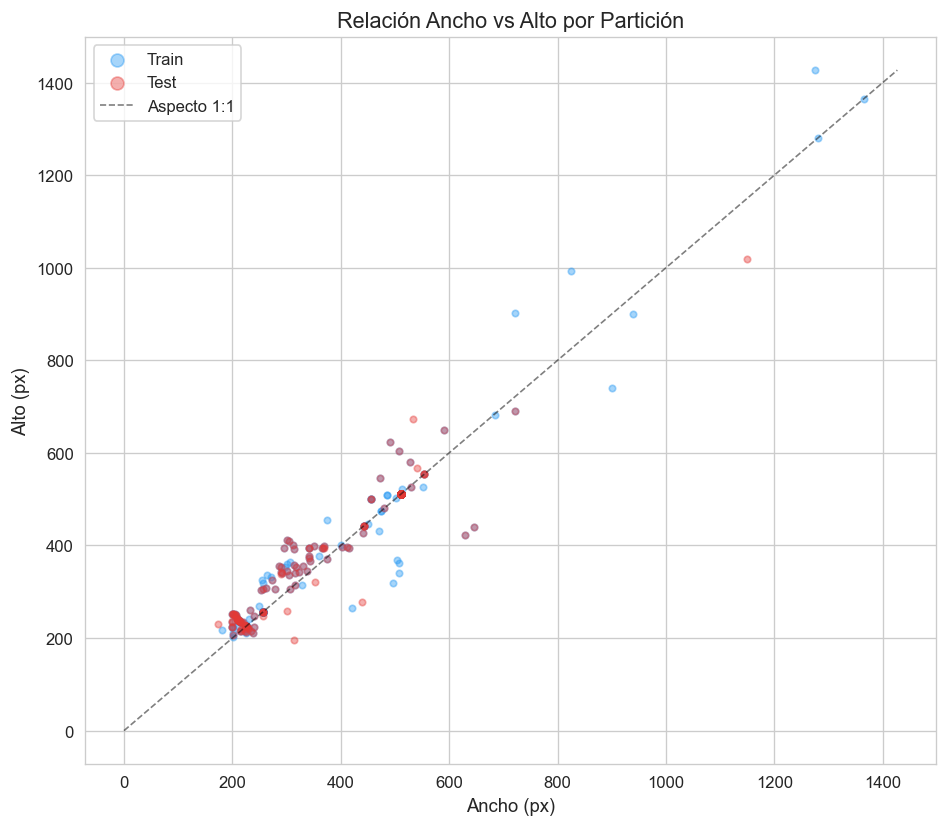
Figura guardada: eda_04_ancho_vs_alto.png
Resolución más frecuente por partición:
train: ['512x512', '256x256', '225x225'] (conteos: [3766, 25, 8])
test: ['512x512', '225x225', '256x256'] (conteos: [738, 7, 5])
La resolución dominante es 512×512 en ambas particiones, con 3766 casos en train y 738 en test. Los puntos del scatter se concentran sobre la diagonal 1:1, confirmando que las imágenes son mayoritariamente cuadradas y que un redimensionamiento directo a 256×256 no introducirá distorsión geométrica significativa en la mayoría de los casos.
Los pocos casos fuera de la diagonal (resoluciones como 225×225 y algunas superiores a 512) representan una minoría manejable con padding o crop antes del redimensionamiento.
4.4 Mapa de Intensidad de Píxeles#
El mapa de calor sobre la escala de grises permite visualizar la distribución espacial de la señal MRI. En MRI, las intensidades reflejan propiedades del tejido: el tumor puede aparecer como una región hiperintensa o hipointensa respecto al parénquima circundante dependiendo de la secuencia de adquisición. El mapa de calor de la máscara confirma el patrón binario esperado: una región concentrada de alta intensidad sobre un fondo de valor cero.
fig, axes = plt.subplots(4, 2, figsize=(10, 18))
fig.suptitle('Imágenes, Máscaras y Mapas de Intensidad', fontsize=13, fontweight='bold')
for i, particion in enumerate(PARTICIONES):
dir_img = BASE_PATH / particion / 'images'
dir_msk = BASE_PATH / particion / 'masks'
rutas_img = sorted(glob(str(dir_img / '*.png')), key=extraer_numero)
if not rutas_img:
rutas_img = sorted(glob(str(dir_img / '*.jpg')), key=extraer_numero)
ruta_img = rutas_img[0]
nombre = os.path.basename(ruta_img)
nombre_base = os.path.splitext(nombre)[0]
ruta_msk = dir_msk / nombre
if not ruta_msk.exists():
ruta_msk = dir_msk / (nombre_base + '.png')
img = cv2.imread(ruta_img, cv2.IMREAD_GRAYSCALE)
msk = cv2.imread(str(ruta_msk), cv2.IMREAD_GRAYSCALE) if ruta_msk.exists() else np.zeros_like(img)
axes[0, i].imshow(img, cmap='gray')
axes[0, i].set_title(f'{particion.capitalize()} — Imagen', fontsize=10,
color=COLORES_PARTICION[particion], fontweight='bold')
axes[0, i].axis('off')
axes[1, i].imshow(msk, cmap='gray')
axes[1, i].set_title(f'{particion.capitalize()} — Máscara', fontsize=10)
axes[1, i].axis('off')
sns.heatmap(img, cmap='rocket', cbar=True, ax=axes[2, i],
xticklabels=False, yticklabels=False)
axes[2, i].set_title(f'{particion.capitalize()} — Heatmap imagen', fontsize=10)
sns.heatmap(msk, cmap='rocket', cbar=True, ax=axes[3, i],
xticklabels=False, yticklabels=False)
axes[3, i].set_title(f'{particion.capitalize()} — Heatmap máscara', fontsize=10)
plt.tight_layout()
plt.savefig('eda_05_heatmaps.png', bbox_inches='tight')
plt.show()
print('Figura guardada: eda_05_heatmaps.png')
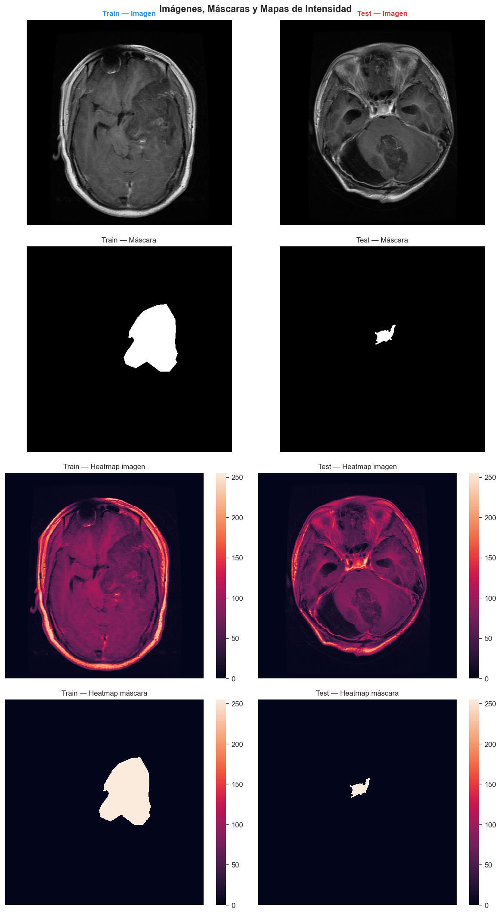
Figura guardada: eda_05_heatmaps.png
Los heatmaps confirman que la señal MRI está concentrada en la región cerebral central, con intensidades bajas en el fondo exterior. En las máscaras, la región de alta intensidad es localizada y ocupa una fracción pequeña del total de píxeles, lo que anticipa el desbalance foreground/background que se cuantifica en la sección 4.7.
4.5 Histograma de Escala de Grises#
El histograma de intensidades describe cómo se distribuyen los valores de píxel en la imagen. En imágenes MRI cerebrales el histograma suele ser multimodal: un pico en intensidades bajas corresponde al fondo, un pico en intensidades medias al parénquima cerebral, y un posible tercer componente de alta intensidad puede corresponder a la región tumoral o a zonas de realce. Esta estructura informa la elección de la estrategia de normalización antes del entrenamiento.
def mostrar_histograma(img_gris, titulo, ax_img, ax_hist, color):
"""Muestra imagen y su histograma de escala de grises lado a lado."""
ax_img.imshow(img_gris, cmap='gray')
ax_img.set_title(titulo, fontsize=10)
ax_img.axis('off')
hist = cv2.calcHist([img_gris], [0], None, [256], [0, 256]).flatten()
ax_hist.plot(hist, color=color, linewidth=1.2)
ax_hist.fill_between(range(256), hist, alpha=0.3, color=color)
ax_hist.set_xlabel('Valor de píxel (0-255)', fontsize=9)
ax_hist.set_ylabel('Frecuencia', fontsize=9)
ax_hist.set_xlim(0, 255)
ax_hist.set_title(f'Histograma — {titulo}', fontsize=10)
fig, axes = plt.subplots(2, len(PARTICIONES), figsize=(13, 8))
fig.suptitle('Histogramas de Intensidad por Partición', fontsize=13, fontweight='bold')
for i, particion in enumerate(PARTICIONES):
dir_img = BASE_PATH / particion / 'images'
rutas = sorted(glob(str(dir_img / '*.png')), key=extraer_numero)
if not rutas:
rutas = sorted(glob(str(dir_img / '*.jpg')), key=extraer_numero)
img = cv2.imread(rutas[0], cv2.IMREAD_GRAYSCALE)
mostrar_histograma(img, particion.capitalize(),
axes[0, i], axes[1, i],
COLORES_PARTICION[particion])
plt.tight_layout()
plt.savefig('eda_06_histogramas_grises.png', bbox_inches='tight')
plt.show()
print('Figura guardada: eda_06_histogramas_grises.png')
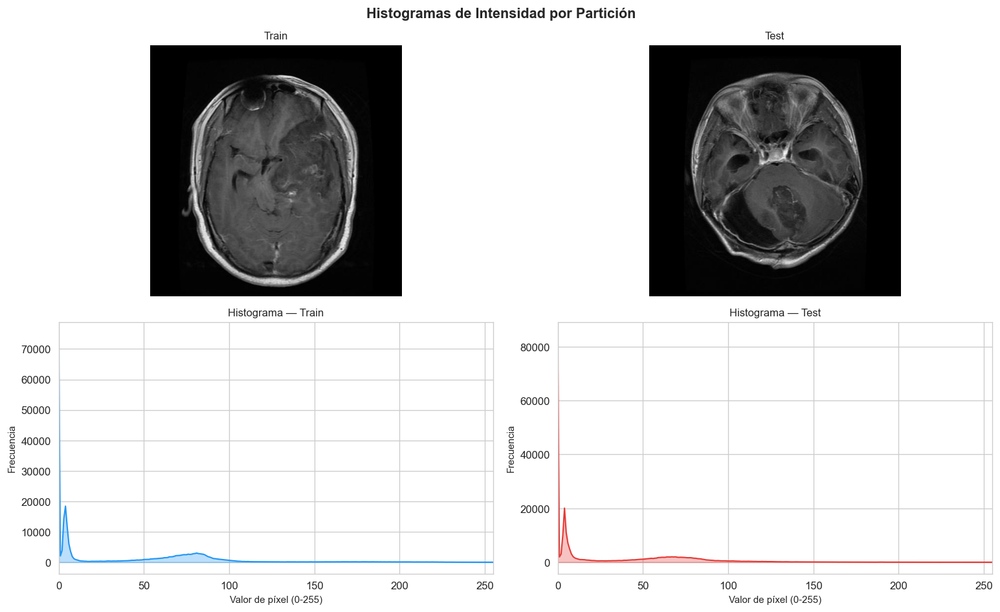
Figura guardada: eda_06_histogramas_grises.png
Los histogramas presentan una distribución fuertemente sesgada hacia valores bajos de intensidad, con un pico pronunciado cerca de cero que corresponde al fondo negro de la imagen. El parénquima cerebral aparece como un segundo componente en intensidades medias, sin un tercer pico claramente separable que identifique el tumor, lo que confirma que la segmentación no puede resolverse con un simple umbral de intensidad y requiere un modelo que capture contexto espacial. Esta estructura justifica el uso de normalización z-score por imagen en lugar de min-max, que quedaría distorsionada por el pico dominante en cero.
4.6 Distribución de Intensidad: Train vs Test#
Se superponen las distribuciones de intensidad de train y test para verificar que sean comparables. Si las distribuciones difieren significativamente, el modelo puede encontrar en test una distribución de entrada distinta a la que vio durante el entrenamiento, lo que puede degradar el Dice Score por un efecto de domain shift y no necesariamente por limitaciones del modelo.
N_MUESTRAS_HIST = 60
print(f'Calculando distribuciones de intensidad ({N_MUESTRAS_HIST} imágenes por partición)...')
fig, ax = plt.subplots(figsize=(11, 5))
for particion in PARTICIONES:
dir_img = BASE_PATH / particion / 'images'
rutas = glob(str(dir_img / '*.png')) + glob(str(dir_img / '*.jpg'))
muestra = random.sample(rutas, min(N_MUESTRAS_HIST, len(rutas)))
pixeles = np.concatenate([
cv2.imread(r, cv2.IMREAD_GRAYSCALE).flatten()
for r in muestra if cv2.imread(r, cv2.IMREAD_GRAYSCALE) is not None
])
sns.histplot(pixeles, bins=256, kde=True,
color=COLORES_PARTICION[particion], label=particion.capitalize(),
alpha=0.45, ax=ax, stat='density')
ax.set_xlabel('Valor de intensidad (0-255)')
ax.set_ylabel('Densidad')
ax.set_title('Distribución de Intensidad de Píxeles: Train vs Test')
ax.legend(title='Partición')
ax.set_xlim(0, 255)
plt.tight_layout()
plt.savefig('eda_07_distribucion_intensidad.png', bbox_inches='tight')
plt.show()
print('Figura guardada: eda_07_distribucion_intensidad.png')
print('\nEstadísticos de intensidad por partición:')
for particion in PARTICIONES:
dir_img = BASE_PATH / particion / 'images'
rutas = glob(str(dir_img / '*.png')) + glob(str(dir_img / '*.jpg'))
muestra = random.sample(rutas, min(N_MUESTRAS_HIST, len(rutas)))
pixeles = np.concatenate([
cv2.imread(r, cv2.IMREAD_GRAYSCALE).flatten()
for r in muestra if cv2.imread(r, cv2.IMREAD_GRAYSCALE) is not None
])
print(f' {particion:<8} media={pixeles.mean():.1f} std={pixeles.std():.1f} '
f'p5={np.percentile(pixeles,5):.1f} p95={np.percentile(pixeles,95):.1f}')
Calculando distribuciones de intensidad (60 imágenes por partición)...
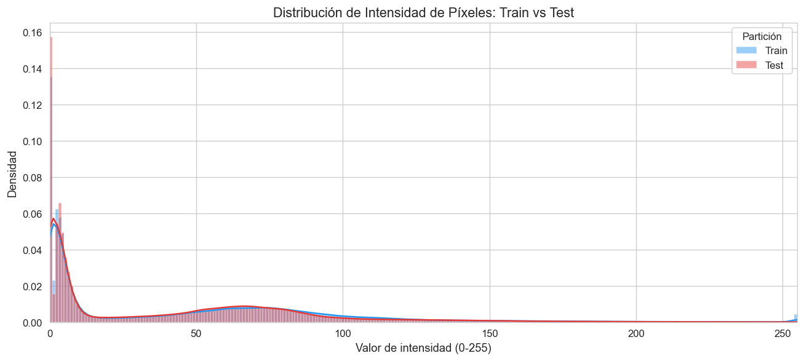
Figura guardada: eda_07_distribucion_intensidad.png
Estadísticos de intensidad por partición:
train media=43.0 std=44.0 p5=0.0 p95=124.0
test media=42.0 std=43.9 p5=0.0 p95=123.0
Las distribuciones de intensidad de train y test son prácticamente idénticas: media 43.0 vs 42.0, std 44.0 vs 43.9, y percentil 95 de 124 vs 123. Esta similitud indica que no hay domain shift en términos de distribución de píxeles entre particiones, y que la estrategia de normalización calculada sobre train puede aplicarse sobre test sin degradación adicional.
4.7 Carga Tumoral: Desbalance Foreground/Background#
Esta es la sección más crítica del EDA para la tarea de segmentación. El desbalance entre píxeles de tumor (foreground) y píxeles de fondo (background) determina directamente la elección de la función de pérdida.
En segmentación médica el tumor típicamente ocupa una fracción pequeña de la imagen. Si se usa Binary Cross-Entropy estándar, el modelo aprende rápidamente a predecir todo como fondo y obtiene una accuracy alta pero un Dice Score cercano a cero. La solución habitual es Dice Loss, que optimiza directamente la superposición entre la predicción y la máscara, o una combinación de BCE ponderado y Dice.
print('Estadísticos de carga tumoral por partición:')
print(df.groupby('Particion')['pct_tumor'].describe().round(3).to_string())
print('\nImágenes con pct_tumor == 0 (sin tumor visible) por partición:')
for p in PARTICIONES:
sub = df[df['Particion'] == p]
n_sin = (sub['pct_tumor'] == 0).sum()
print(f' {p}: {n_sin} de {len(sub)} ({100*n_sin/len(sub):.1f}%)')
print('\nRatio foreground/background por partición:')
for p in PARTICIONES:
sub = df[df['Particion'] == p]
pct_media = sub[sub['pct_tumor'] > 0]['pct_tumor'].mean()
ratio = (100 - pct_media) / pct_media if pct_media > 0 else float('inf')
print(f' {p:<8}: {pct_media:.2f}% tumor en promedio -> '
f'ratio fondo/tumor = {ratio:.1f}x')
Estadísticos de carga tumoral por partición:
count mean std min 25% 50% 75% max
Particion
test 860.0 2.115 2.034 0.127 0.780 1.416 2.751 16.700
train 3933.0 1.835 1.477 0.041 0.859 1.438 2.321 19.609
Imágenes con pct_tumor == 0 (sin tumor visible) por partición:
train: 0 de 3933 (0.0%)
test: 0 de 860 (0.0%)
Ratio foreground/background por partición:
train : 1.83% tumor en promedio -> ratio fondo/tumor = 53.5x
test : 2.12% tumor en promedio -> ratio fondo/tumor = 46.3x
fig, axes = plt.subplots(1, 3, figsize=(16, 5))
fig.suptitle('Distribución de Carga Tumoral (% píxeles de tumor) por Partición',
fontsize=13, fontweight='bold')
# Boxplot
datos_box = [df[df['Particion'] == p]['pct_tumor'].values for p in PARTICIONES]
bp = axes[0].boxplot(datos_box, patch_artist=True,
labels=[p.capitalize() for p in PARTICIONES])
for patch, p in zip(bp['boxes'], PARTICIONES):
patch.set_facecolor(COLORES_PARTICION[p])
patch.set_alpha(0.75)
axes[0].set_ylabel('% píxeles de tumor por imagen')
axes[0].set_title('Boxplot de carga tumoral')
axes[0].set_xlabel('Partición')
# Histograma superpuesto
for p in PARTICIONES:
sub = df[df['Particion'] == p]
axes[1].hist(sub['pct_tumor'], bins=40, alpha=0.55,
color=COLORES_PARTICION[p], label=p.capitalize(), density=True)
axes[1].set_xlabel('% píxeles de tumor')
axes[1].set_ylabel('Densidad')
axes[1].set_title('Distribución de carga tumoral')
axes[1].legend(title='Partición')
# Imágenes con / sin tumor
for i, p in enumerate(PARTICIONES):
sub = df[df['Particion'] == p]
n_con = (sub['pct_tumor'] > 0).sum()
n_sin = (sub['pct_tumor'] == 0).sum()
axes[2].bar(i - 0.2, n_con, 0.35,
label='Con tumor' if i == 0 else '',
color=COLORES_PARTICION[p], alpha=0.85)
axes[2].bar(i + 0.2, n_sin, 0.35,
label='Sin tumor' if i == 0 else '',
color=COLORES_PARTICION[p], alpha=0.35)
axes[2].set_xticks(range(len(PARTICIONES)))
axes[2].set_xticklabels([p.capitalize() for p in PARTICIONES])
axes[2].set_ylabel('Número de imágenes')
axes[2].set_title('Imágenes con / sin tumor visible')
axes[2].legend()
plt.tight_layout()
plt.savefig('eda_08_carga_tumoral.png', bbox_inches='tight')
plt.show()
print('Figura guardada: eda_08_carga_tumoral.png')
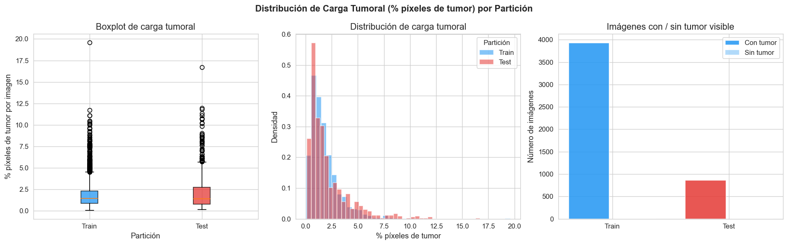
Figura guardada: eda_08_carga_tumoral.png
La mediana de pct_tumor es 1.44% en train y 1.42% en test, con ratios fondo/tumor de 53.5x y 46.3x respectivamente. Este es el hallazgo más relevante del EDA: por cada píxel de tumor hay aproximadamente 50 píxeles de fondo, lo que hace que Binary Cross-Entropy estándar sea directamente inapropiada — el modelo podría alcanzar más del 98% de accuracy prediciendo todo como fondo.
Ninguna imagen tiene pct_tumor igual a cero, lo que simplifica el manejo del dataset: no hay casos sin tumor que requieran tratamiento especial durante el entrenamiento.
5. Análisis de Brillo y Contraste#
Se calculan el brillo medio, el contraste RMS y la entropía de cada imagen para detectar diferencias sistemáticas entre particiones. Si train y test tienen perfiles de brillo similares, no hay evidencia de domain shift en esta dimensión.
print('Calculando brillo y contraste por imagen...')
registros_brillo = []
for _, row in df.iterrows():
dir_img = BASE_PATH / row['Particion'] / 'images'
ruta_img = dir_img / row['Nombre']
img = cv2.imread(str(ruta_img), cv2.IMREAD_GRAYSCALE)
if img is None:
continue
img_f = img.astype(float)
brillo = img_f.mean()
contraste = img_f.std()
hist_e, _ = np.histogram(img.flatten(), bins=256, range=(0,256), density=True)
hist_e = hist_e[hist_e > 0]
entropia = -np.sum(hist_e * np.log2(hist_e))
registros_brillo.append({
'Particion': row['Particion'],
'brillo_medio': brillo,
'contraste_rms': contraste,
'entropia': entropia
})
df_brillo = pd.DataFrame(registros_brillo)
print('\nEstadísticos de brillo, contraste y entropía por partición:')
print(df_brillo.groupby('Particion')[['brillo_medio', 'contraste_rms', 'entropia']]
.describe().round(2).to_string())
Calculando brillo y contraste por imagen...
Estadísticos de brillo, contraste y entropía por partición:
brillo_medio contraste_rms entropia
count mean std min 25% 50% 75% max count mean std min 25% 50% 75% max count mean std min 25% 50% 75% max
Particion
test 860.0 45.42 16.23 17.36 34.67 42.90 51.64 137.76 860.0 44.32 9.74 22.98 38.34 42.52 47.42 90.85 860.0 5.93 0.73 3.17 5.51 6.0 6.50 7.73
train 3933.0 42.49 12.48 13.69 33.83 41.83 50.14 137.76 3933.0 42.38 7.00 20.83 38.34 42.02 45.85 90.85 3933.0 5.88 0.75 3.17 5.38 6.0 6.51 7.76
fig, axes = plt.subplots(1, 3, figsize=(15, 5))
fig.suptitle('Brillo, Contraste y Entropía: Train vs Test', fontsize=13, fontweight='bold')
metricas = [
('brillo_medio', 'Brillo Medio'),
('contraste_rms', 'Contraste RMS'),
('entropia', 'Entropía (bits)')
]
for ax, (metrica, titulo) in zip(axes, metricas):
datos = [df_brillo[df_brillo['Particion'] == p][metrica].values for p in PARTICIONES]
bp = ax.boxplot(datos, patch_artist=True,
labels=[p.capitalize() for p in PARTICIONES])
for patch, p in zip(bp['boxes'], PARTICIONES):
patch.set_facecolor(COLORES_PARTICION[p])
patch.set_alpha(0.75)
ax.set_title(titulo, fontsize=10)
ax.set_ylabel(metrica.replace('_', ' '))
plt.tight_layout()
plt.savefig('eda_09_brillo_contraste.png', bbox_inches='tight')
plt.show()
print('Figura guardada: eda_09_brillo_contraste.png')
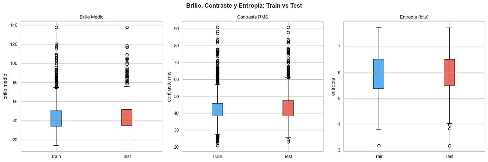
Figura guardada: eda_09_brillo_contraste.png
Train y test presentan perfiles similares en contraste RMS (42.38 vs 44.32) y entropía (5.88 vs 5.93), con diferencias marginales. El brillo medio difiere ligeramente (42.49 vs 45.42), diferencia que la prueba estadística de la sección 8 confirma como significativa. Dado que la diferencia absoluta es pequeña en escala 0-255, la normalización z-score por imagen es suficiente para absorberla sin necesidad de ajustes adicionales por partición.
6. Imagen Promedio y Mapa de Variabilidad#
La imagen promedio revela la anatomía promedio del dataset y la ubicación más frecuente del tumor. El mapa de variabilidad indica qué regiones presentan más diferencia entre casos. En segmentación, una alta variabilidad en la región tumoral es esperable: el modelo debe aprender a segmentar tumores de distintos tamaños, formas y localizaciones.
TAMANO_PROM = (256, 256)
N_PROM = 80
print(f'Calculando imagen promedio ({N_PROM} imágenes, {TAMANO_PROM}px)...')
imagenes_prom = {}
imagenes_std_map = {}
mascaras_prom = {}
for particion in PARTICIONES:
dir_img = BASE_PATH / particion / 'images'
dir_msk = BASE_PATH / particion / 'masks'
rutas = glob(str(dir_img / '*.png')) + glob(str(dir_img / '*.jpg'))
muestra = random.sample(rutas, min(N_PROM, len(rutas)))
acum = np.zeros(TAMANO_PROM, dtype=np.float64)
acum_sq = np.zeros(TAMANO_PROM, dtype=np.float64)
acum_msk = np.zeros(TAMANO_PROM, dtype=np.float64)
n_val = 0
for ruta_img in muestra:
img = cv2.imread(ruta_img, cv2.IMREAD_GRAYSCALE)
if img is None:
continue
img_res = cv2.resize(img.astype(np.float64), TAMANO_PROM, interpolation=cv2.INTER_AREA)
acum += img_res
acum_sq += img_res ** 2
n_val += 1
nombre = os.path.basename(ruta_img)
nombre_base = os.path.splitext(nombre)[0]
ruta_msk = dir_msk / nombre
if not ruta_msk.exists():
ruta_msk = dir_msk / (nombre_base + '.png')
if ruta_msk.exists():
msk = cv2.imread(str(ruta_msk), cv2.IMREAD_GRAYSCALE)
if msk is not None:
msk_res = cv2.resize(msk.astype(np.float64), TAMANO_PROM,
interpolation=cv2.INTER_NEAREST)
acum_msk += (msk_res > 0).astype(float)
if n_val > 0:
prom = acum / n_val
var = acum_sq / n_val - prom ** 2
imagenes_prom[particion] = np.clip(prom, 0, 255).astype(np.uint8)
imagenes_std_map[particion] = np.clip(np.sqrt(np.maximum(var, 0)), 0, 255).astype(np.uint8)
mascaras_prom[particion] = (acum_msk / n_val * 255).astype(np.uint8)
print(f' {particion}: {n_val} imágenes procesadas.')
Calculando imagen promedio (80 imágenes, (256, 256)px)...
train: 80 imágenes procesadas.
test: 80 imágenes procesadas.
fig, axes = plt.subplots(3, len(PARTICIONES), figsize=(10, 13))
fig.suptitle('Imagen Promedio, Variabilidad y Frecuencia de Tumor por Partición',
fontsize=13, fontweight='bold')
for j, particion in enumerate(PARTICIONES):
axes[0, j].imshow(imagenes_prom[particion], cmap='gray')
axes[0, j].set_title(particion.capitalize(), fontweight='bold',
color=COLORES_PARTICION[particion])
axes[0, j].axis('off')
if j == 0:
axes[0, j].set_ylabel('Imagen promedio', fontsize=9)
im = axes[1, j].imshow(imagenes_std_map[particion], cmap='hot')
axes[1, j].axis('off')
plt.colorbar(im, ax=axes[1, j], fraction=0.046, pad=0.04)
if j == 0:
axes[1, j].set_ylabel('Mapa de variabilidad', fontsize=9)
im2 = axes[2, j].imshow(mascaras_prom[particion], cmap='Reds')
axes[2, j].axis('off')
plt.colorbar(im2, ax=axes[2, j], fraction=0.046, pad=0.04)
if j == 0:
axes[2, j].set_ylabel('Frecuencia de tumor', fontsize=9)
plt.tight_layout()
plt.savefig('eda_10_imagen_promedio.png', bbox_inches='tight')
plt.show()
print('Figura guardada: eda_10_imagen_promedio.png')
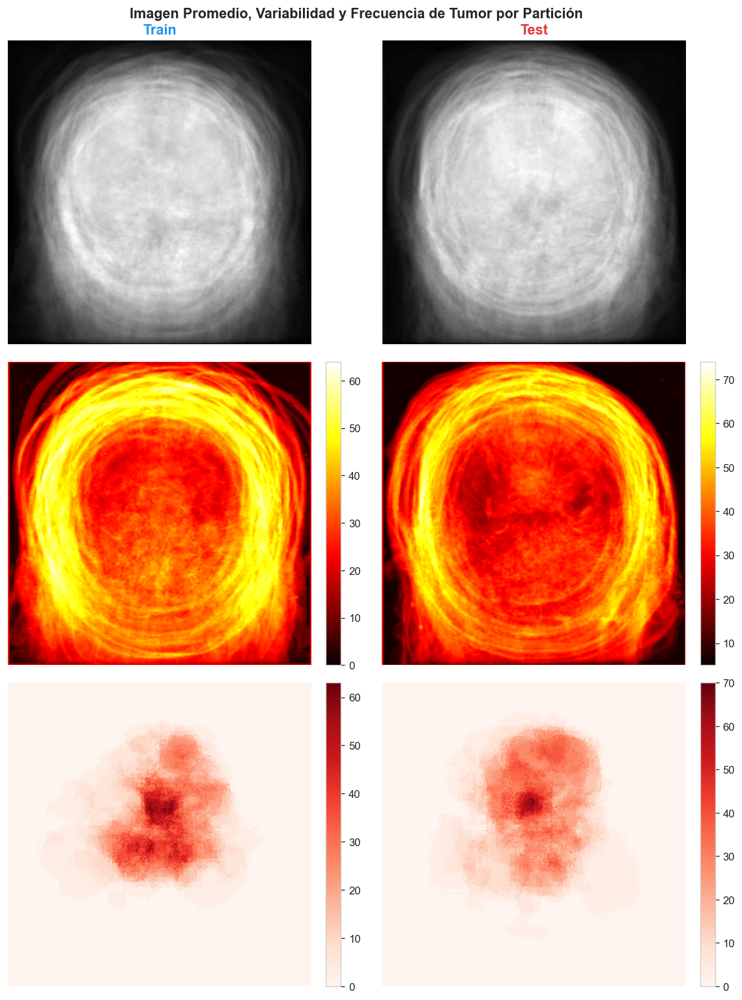
Figura guardada: eda_10_imagen_promedio.png
La imagen promedio de ambas particiones revela la estructura anatómica central del cerebro con buena definición, lo que indica que los cortes están razonablemente alineados entre sí. El mapa de variabilidad muestra mayor dispersión en los bordes del cráneo y en las regiones periventriculares, que son zonas de alta variabilidad inter-sujeto. El mapa de frecuencia de tumor no está concentrado en una subregión específica, lo que implica que el modelo no puede apoyarse en sesgos de localización y debe aprender a detectar el tumor en cualquier posición del corte.
7. Filtrado de Imágenes con OpenCV#
Las imágenes MRI presentan ruido de tipo Rician, que se origina en la naturaleza compleja de la señal de resonancia magnética. Se comparan tres filtros clásicos para evaluar cuál preserva mejor los bordes del tumor. En segmentación los bordes son exactamente lo que el modelo debe aprender a delimitar, por lo que un filtro que los borre es contraproducente como paso de preprocesamiento.
def aplicar_filtros_y_visualizar(img_gris, titulo, ax_arr):
"""Compara la imagen original con tres filtros de suavizado."""
filtrada_media = cv2.blur(img_gris, (3, 3))
filtrada_mediana = cv2.medianBlur(img_gris, 3)
filtrada_gaussiana = cv2.GaussianBlur(img_gris, (3, 3), 0)
variantes = [
(img_gris, 'Original'),
(filtrada_media, 'Filtro de media'),
(filtrada_mediana, 'Filtro de mediana'),
(filtrada_gaussiana, 'Filtro gaussiano')
]
for ax, (img_v, nombre) in zip(ax_arr, variantes):
ax.imshow(img_v, cmap='gray')
ax.set_title(nombre, fontsize=9)
ax.axis('off')
ax_arr[0].set_ylabel(titulo, fontsize=9, rotation=90)
fig, axes = plt.subplots(len(PARTICIONES), 4, figsize=(15, 8))
fig.suptitle('Comparación de Filtros de Suavizado por Partición', fontsize=13, fontweight='bold')
for i, particion in enumerate(PARTICIONES):
dir_img = BASE_PATH / particion / 'images'
rutas = sorted(glob(str(dir_img / '*.png')), key=extraer_numero)
if not rutas:
rutas = sorted(glob(str(dir_img / '*.jpg')), key=extraer_numero)
img = cv2.imread(rutas[0], cv2.IMREAD_GRAYSCALE)
aplicar_filtros_y_visualizar(img, particion.capitalize(), axes[i])
plt.tight_layout()
plt.savefig('eda_11_filtros.png', bbox_inches='tight')
plt.show()
print('Figura guardada: eda_11_filtros.png')
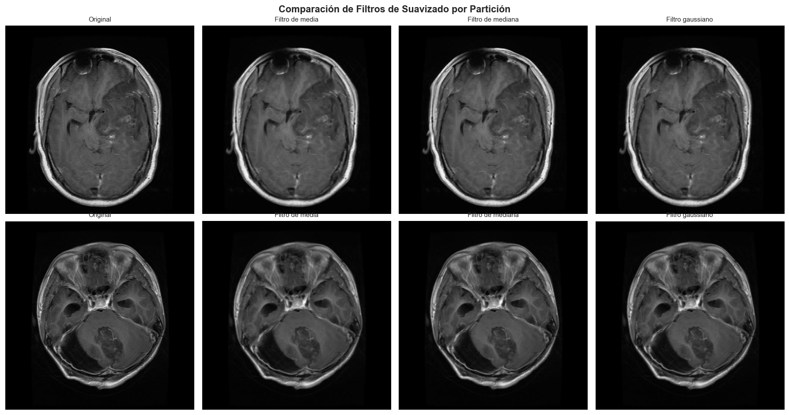
Figura guardada: eda_11_filtros.png
El filtro de mediana preserva mejor los bordes del tumor que el de media y el gaussiano, que producen un suavizado más uniforme a costa de difuminar las transiciones abruptas entre tejido tumoral y parénquima sano. Dado que esos bordes son exactamente lo que la máscara anota y el modelo debe aprender a delimitar, no sería apropiado aplicar ningún filtro como paso estándar del pipeline de preprocesamiento, y se deja que la red aprenda a manejar el ruido inherente a la imagen.
8. Separabilidad Estadística entre Particiones#
Se aplica la prueba de Mann-Whitney U sobre el brillo medio entre train y test para determinar si las distribuciones de intensidad son estadísticamente equivalentes. Si lo son, no hay evidencia de domain shift y el modelo puede generalizarse sin ajustes adicionales de normalización.
g_train = df_brillo[df_brillo['Particion'] == 'train']['brillo_medio'].values
g_test = df_brillo[df_brillo['Particion'] == 'test']['brillo_medio'].values
u_stat, p_val = stats.mannwhitneyu(g_train, g_test, alternative='two-sided')
print('Prueba de Mann-Whitney U sobre brillo medio (train vs test):')
print(f' Estadístico U = {u_stat:.4f}, p-valor = {p_val:.6f}')
if p_val < 0.05:
print(' Conclusión: diferencia significativa entre particiones (p < 0.05).')
print(' Recomendación: usar normalización z-score por imagen individual.')
else:
print(' Conclusión: no se detecta diferencia significativa entre particiones.')
print(' Recomendación: normalización global o por imagen son ambas adecuadas.')
# Estadísticos descriptivos comparados
print('\nComparación de estadísticos de brillo:')
for p in PARTICIONES:
vals = df_brillo[df_brillo['Particion'] == p]['brillo_medio'].values
print(f' {p:<8}: media={vals.mean():.2f} std={vals.std():.2f} '
f'mediana={np.median(vals):.2f}')
Prueba de Mann-Whitney U sobre brillo medio (train vs test):
Estadístico U = 1580376.0000, p-valor = 0.002574
Conclusión: diferencia significativa entre particiones (p < 0.05).
Recomendación: usar normalización z-score por imagen individual.
Comparación de estadísticos de brillo:
train : media=42.49 std=12.47 mediana=41.83
test : media=45.42 std=16.22 mediana=42.90
El p-valor de 0.0026 rechaza la hipótesis nula de distribuciones iguales en brillo entre train y test. Sin embargo, la diferencia de medias es de apenas 2.93 puntos en escala 0-255 (42.49 vs 45.42), lo que la hace estadísticamente significativa por el tamaño de la muestra pero no prácticamente relevante. La normalización z-score por imagen individual elimina esta diferencia residual sin necesidad de ningún ajuste adicional por partición.
9. Resumen del Análisis Exploratorio#
print('=' * 68)
print('RESUMEN EJECUTIVO — EDA BRISC 2025')
print('Tarea: Segmentación semántica de tumores cerebrales en MRI')
print('=' * 68)
print(f'\n1. VOLUMEN')
for p in PARTICIONES:
datos = conteo_particion[p]
print(f' {p:<8}: {datos["imagenes"]} imágenes, {datos["mascaras"]} máscaras, '
f'{datos["sin_mascara"]} sin máscara')
print(f' Total: {sum(d["imagenes"] for d in conteo_particion.values())} imágenes')
print(f'\n2. DIMENSIONES')
for p in PARTICIONES:
sub = df[df['Particion'] == p]
print(f' {p:<8}: alto={sub["alto"].mean():.0f}±{sub["alto"].std():.0f}px '
f'ancho={sub["ancho"].mean():.0f}±{sub["ancho"].std():.0f}px')
print(f' Recomendación: redimensionar a 256x256 — INTER_AREA para imágenes, '
f'INTER_NEAREST para máscaras.')
print(f'\n3. CARGA TUMORAL (foreground/background)')
for p in PARTICIONES:
sub = df[df['Particion'] == p]
med = sub['pct_tumor'].median()
n_sin = (sub['pct_tumor'] == 0).sum()
pct_media = sub[sub['pct_tumor'] > 0]['pct_tumor'].mean()
ratio = (100 - pct_media) / pct_media if pct_media > 0 else float('inf')
print(f' {p:<8}: mediana={med:.2f}% ratio fondo/tumor={ratio:.1f}x '
f'sin tumor={n_sin} ({100*n_sin/len(sub):.1f}%)')
print(f' Recomendación: usar Dice Loss o 0.5*BCE_ponderado + 0.5*Dice.')
print(f'\n4. DOMAIN SHIFT (brillo train vs test)')
print(f' Mann-Whitney U p-valor = {p_val:.6f}')
if p_val < 0.05:
print(f' Diferencia significativa. Usar normalización z-score por imagen.')
else:
print(f' No se detecta domain shift. Normalización global es suficiente.')
print(f'\n5. RECOMENDACIONES PARA MODELADO')
print(f' - Redimensionar: 256x256 con interpolación diferenciada imagen/máscara.')
print(f' - Normalización: z-score por imagen individual.')
print(f' - Función de pérdida: Dice Loss o 0.5*BCE_ponderado + 0.5*Dice.')
print(f' - Métricas de evaluación: Dice Score + IoU (Jaccard).')
print(f' - Augmentación: flips horizontales/verticales, rotaciones ±15°, zoom ±10%.')
print(f' Evitar transformaciones geométricas severas que distorsionen la anatomía.')
print('\n' + '=' * 68)
====================================================================
RESUMEN EJECUTIVO — EDA BRISC 2025
Tarea: Segmentación semántica de tumores cerebrales en MRI
====================================================================
1. VOLUMEN
train : 3933 imágenes, 3933 máscaras, 0 sin máscara
test : 860 imágenes, 860 máscaras, 0 sin máscara
Total: 4793 imágenes
2. DIMENSIONES
train : alto=506±50px ancho=505±51px
test : alto=487±79px ancho=485±85px
Recomendación: redimensionar a 256x256 — INTER_AREA para imágenes, INTER_NEAREST para máscaras.
3. CARGA TUMORAL (foreground/background)
train : mediana=1.44% ratio fondo/tumor=53.5x sin tumor=0 (0.0%)
test : mediana=1.42% ratio fondo/tumor=46.3x sin tumor=0 (0.0%)
Recomendación: usar Dice Loss o 0.5*BCE_ponderado + 0.5*Dice.
4. DOMAIN SHIFT (brillo train vs test)
Mann-Whitney U p-valor = 0.002574
Diferencia significativa. Usar normalización z-score por imagen.
5. RECOMENDACIONES PARA MODELADO
- Redimensionar: 256x256 con interpolación diferenciada imagen/máscara.
- Normalización: z-score por imagen individual.
- Función de pérdida: Dice Loss o 0.5*BCE_ponderado + 0.5*Dice.
- Métricas de evaluación: Dice Score + IoU (Jaccard).
- Augmentación: flips horizontales/verticales, rotaciones ±15°, zoom ±10%.
Evitar transformaciones geométricas severas que distorsionen la anatomía.
====================================================================